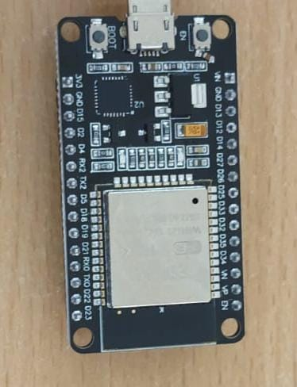
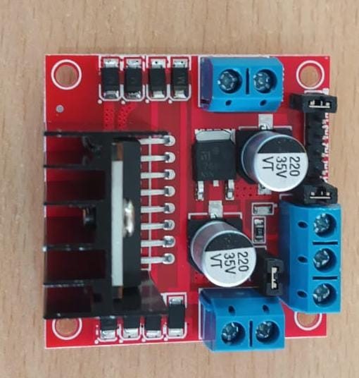
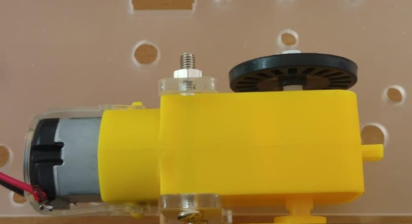
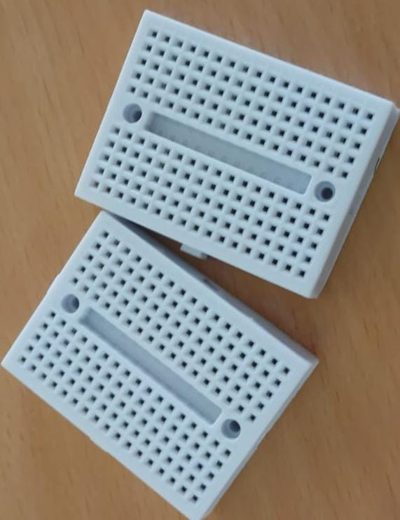
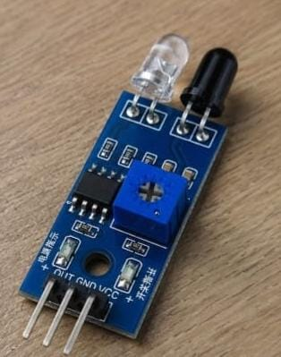
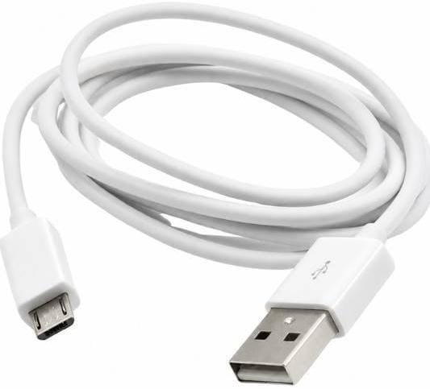
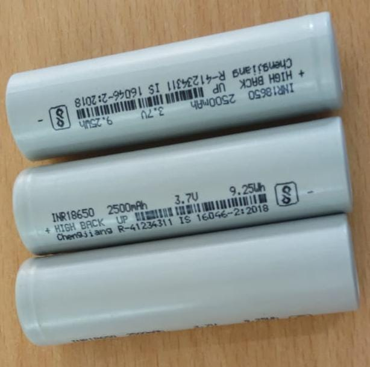

02 Components
Eight parts, wired together on a breadboard, form the complete robot.

01
ESP32
Central processing unit with built-in Wi-Fi and Bluetooth for navigation logic and telemetry.

02
L298N Motor Driver
Dual H-bridge that lets low-voltage ESP32 signals safely drive the higher-voltage DC motors.

03
DC Motor
Electromechanical actuator converting electrical energy into wheel motion.

04
Breadboard
Solderless platform for prototyping and wiring the circuit.

05
IR Sensor
Proximity unit that emits and reads infrared light to detect obstacles.

06
Programming Cable
USB link for flashing firmware from computer to ESP32.

07
Battery Holder
Houses the power source with organized terminal connections.

08
12V Battery
Powers the motors, driver, and system hardware.